Dokumentation
Allgemeine Informationen
Bearbeitungszeitraum: 01.04.2016 - 30.09.2016
Team:
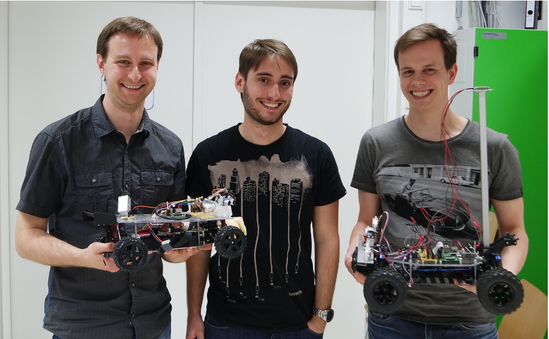
| Vorname | Nachname | Studienfach |
| Pavel | Andrejev | M.Sc. Angewandte Informatik |
| Philipp | Rettig | M.Sc. Angewandte Informatik |
| Richard | Schönpflug | M.Sc. Angewandte Informatik |
Betreuer: Gero Plettenberg
Supervisor: Thomas Kloepfer
Aufgabenstellung:
Es existieren bereits Lösungen zum Projekt “GPS auf Rädern” aus vorangegangenen Semestern. Diese entwickelten zwei Modellautos, welche autonom mit Hilfe von GPS-Daten und Ultraschallsensoren zu einem festgelegten Zielpunkt fahren und dabei Hindernissen ausweichen können. Ziel dieses Fortgeschrittenenpraktikums ist die Weiterentwicklung der bestehenden Lösungen, indem Komponenten kombiniert, erweitert, oder ausgetauscht werden, sodass ein robustes, schnell einsatzfähiges Fahrzeug entsteht. Die Benutzung und Kontrolle des Fahrzeugs soll trivial und selbsterklärend sein.
Ergebnis
Das Endergebnis unseres Projekts ist eine Erweiterung des Modell A des GPS-Car von 2014. Zahlreiche Verbesserungen an Hard- und Software wurden vorgenommen.
Diese umfassen unter anderem:
- Weboberfläche zur Auswahl des Ziels und Starten der Navigation (ausführliche Beschreibung unter Milestone 2)
- Debug Möglichkeiten durch zahlreiche Ausgaben auf der Weboberfläche
- Korrektes Threading im Code
- Strukturierung des Codes in sinnvollere Klassen
- Anpassen der Kompass Kalibrierung
- Robustere Gesamtkonstruktion
- Dokumentation aller Veränderungen und detaillierte Anweisungen zukünftige Verbesserungen
- Eine leicht verständliche Anleitung für die Inbetriebnahme wurde erstellt, die sich im Punkt "Anleitung zur Inbetriebnahme" finden lässt.
- Weboberfläche zur Auswahl des Ziels und Starten der Navigation (ausführliche Beschreibung unter Milestone 2)
- Debug Möglichkeiten durch zahlreiche Ausgaben auf der Weboberfläche
- Korrektes Threading im Code
- Strukturierung des Codes in sinnvollere Klassen
- Anpassen der Kompass Kalibrierung
- Robustere Gesamtkonstruktion
- Dokumentation aller Veränderungen und detaillierte Anweisungen zukünftige Verbesserungen
- Eine leicht verständliche Anleitung für die Inbetriebnahme wurde erstellt, die sich im Punkt "Anleitung zur Inbetriebnahme" finden lässt.
| 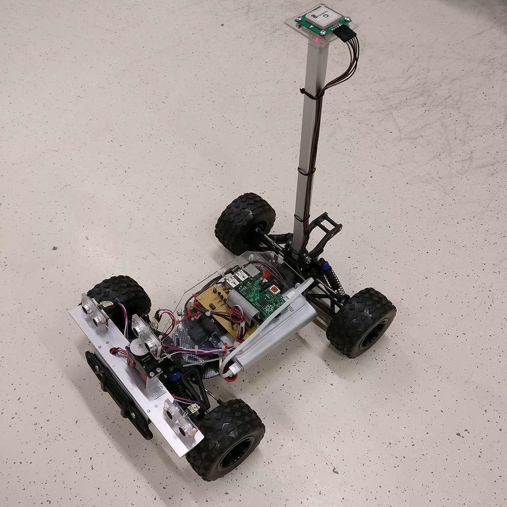 | 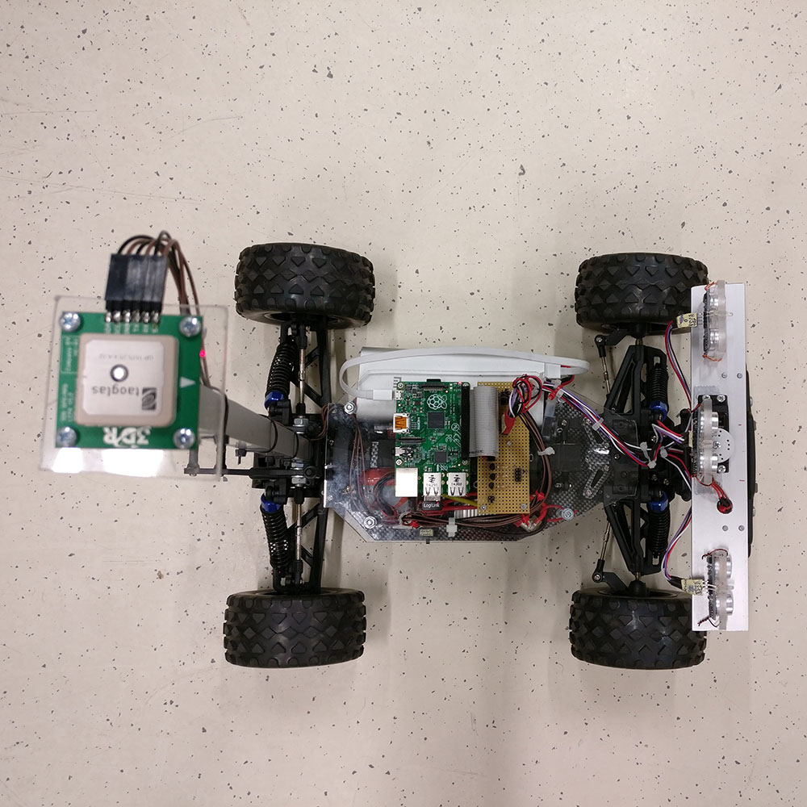 |
| Das Fahrzeug am Ende des Praktikums | Draufsicht auf das Fahrzeug |
Projektverlauf
Unser Projekt lief vom 01.04.2016 bis zum 30.9.2016 und wurde von Anfang an mit diversen Milestones geplant.
Milestone 1 (27.06.2016): Evaluierung der Autos und Client/Server Architektur
Auf dem Screenshot der Weboberfläche sind alle Funktionalitäten zu sehen. Auf der Karte ist die aktuelle Position des Autos markiert. Die Karte im Bereich des Neuenheimer Feld ist offline auf dem Raspberry verfügbar. Durch Klicken lässt sich ein Ziel auswählen, dessen Koordinaten unten bei angezeigt werden. Durch einen Klick auf "Ziel auf Markierung setzen", wird dieser Marker als aktuelle Zielposition eingetragen. Durch einen weiteren Klick auf den "Aktiv" Switch beginnt das Auto die automatische Ansteuerung des Ziels. Zusätzlich lassen sich auf der linken Seite zahlreiche Informationen zu den aktuellen GPS Daten ablesen. Unterhalb der Karte ist ebenfalls der aktuelle Status der Fahrzeugsteuerung und der gewünschte Status angezeigt. Dieser gibt zum Beispiel die Fahrtrichtung "vorwärts" aus. Desweiteren lässt sich der aktuelle Status der Sensoren auslesen. Ist kein Hindernis in Sicht, erscheinen diese Grün. Bei einem eventuellen Hindernis gelb. Ist mit Sicherheit ein Hindernis im Weg, wird die Statusanzeige rot. Wenn einer der beiden Sensoren links oder rechts ein Ziel erkannt hat, wird der mittlere Sensor ausgelesen um einen Weg um das Hindernis herum zu ermitteln. Jederzeit wird für jeden Sensor der Abstand zum nächsten Hindernis angezeigt. Die komplette Weboberfläche ist responsive aufgebaut und kann somit von beliebigen Endgeräten wie Smartphones bequem benutzt werden. In der rechten oberen Ecke befindet sich zudem ein Fragezeichen Button, mit dem diese Dokumentation geöffnet werden kann.
Milestone 3 (15.08.2016): Verlagern des GPS/Kompass Moduls
Unsere ersten Ideen waren es, das Modul gegen elektrische Felder abzuschirmen, oder eine externe Antenne zu verwenden. Wir führten zunächst Messungen der GPS Genauigkeit in der ursprünglichen Position durch und brachten das Modul dann provisorisch auf der Halterung des Heckspoilers an. Nach der Durchführung einer weiteren Reihe an Messungen stellten wir fest, dass diese Distanz scheinbar ausreichend war um eine Störung des GPS durch andere Komponenten auszuschließen.
Später bemerkten wir bei der Evaluierung des Kompass jedoch, dass dieser durch die Spule des Motors gestört wird. Statt des vollen Spektrums von 0 bis 360 Grad gab dieser nur Werte in einem Bereich von 20 bis 40 zurück und schwankte dabei stark. Da es sehr schwierig ist, magnetische Felder abzuschirmen, waren wir gezwungen das Modul wieder auf den Stab zu verlagern.
Der Ansatz der externen Antenne verfiel nach einiger Recherche, da das GPS Modul bereits über eine Antenne verfügt. Diese ist allerdings bei GPS Modulen nicht in Form einer Stabantenne möglich, sondern ist in Form einer rechteckigen Fläche. Oberhalb der eigentlichen Platine befindet sich die rechteckige, etwa 2cm² große Keramikplatte, welche die Antenne beherbergt. Diese ist eine der größten und genauesten Ausführungen die im Modellbaubereich erhältlich ist.
Unsere letzte Idee zur Erhöhung der GPS Präzision bestand darin, das WLAN Modul in die Front des Fahrzeugs zu verlegen. Nachdem eine weitere Reihe Tests keine messbaren Unterschiede hervorbrachte, verlegten wir das GPS Modul zu Testzwecken direkt neben das GPS Modul. Auch hier sahen wir keine nennenswerten Schwankungen in der Genauigkeit, weswegen wir das WLAN Modul wieder an seinen ursprünglichen Platz direkt im Raspberry verlegten und es als Störquelle ausschließen konnten.
Die erreichte Genauigkeit in den verschiedenen Konfigurationen lässt sich an den unten aufgeführten Plots ablesen. Sie liegt im Mittel bei ca. 8,5 Metern. Dies ist ausreichend für eine ungefähre Navigation in Richtung Ziel. Es wäre sinnvoll hier in einem weiterführenden Projekt anzusetzen, um die Standortbestimmung zu verbessern. Mehr dazu unter Ausblick. Ein Schaltplan zum Anschluss des GPS Moduls befindet sich unter Medien.
Milestone 4 (23.09.2016): Verbesserungen an Hardware, Kabelmanagement und Dokumentation
Milestone 1 (27.06.2016): Evaluierung der Autos und Client/Server Architektur
Für den ersten Milestone war zunächst die Evaluierung beider Modellautos geplant. Hierbei wurden Hardware- und Softwareaspekte berücksichtigt.
Modell B hatte eine etwas vielversprechendere Code Basis, wurde jedoch durch den Umzug des Robotiklabors ins Mathematikon
physikalisch stark in Mitleidenschaft gezogen. Modell A hingegen war in einem beinahe fahrbereiten Zustand, weswegen wir es als Basis für unsere
Anpassungen auswählten. Desweiteren besitzt es einen dritten Ultraschallsensor zur verbesserten Navigation.
Als weiterer Punkt waren Testfahrten geplant, welche auch unternommen wurden. Hierbei wurden erste Testdaten zur Pfadfindung, Bedienbarkeit und GPS Genauigkeit erhoben.
Anschließend implementierten wir zuerst eine Client/Server Struktur um Informationen vom Fahrzeug leichter auszutauschen und zu visualisieren. Hierdurch wurde das Debugging bereits vereinfacht und beschleunigt.
Milestone 2 (18.07.2016): Erweiterung der Client/Server Struktur und Untersuchung der Sensoren
Der erste Unterpunkt unseres zweiten Milestones war die Erweiterung der Client/Server Struktur um die Initialisierung des Fahrzeugs zu erleichtern. Hierfür wurden alle nötigen
Startroutinen des Fahrzeugs über die Weboberfläche zugänglich gemacht und der Server für diese in den Autostart des Raspberrys gelegt. Dadurch erleichterte sich die Inbetriebnahme bereits enorm.
Somit muss nun nach der Herstellung der Stromversorgung kein Zugriff per SSH erfolgen um die Navigation zu starten. Stattdessen genügt es, sich mit dem vom Fahrzeug aufgebauten WLAN zu verbinden und die Weboberfläche im
Browser aufzurufen. Hier kann nun auch das Ziel der Navigation bequem auf einer Karte ausgewählt werden. Zuvor war die Anpassung der Zielkoordinaten mit aufwändigen Anpassungen am Programmcode verbunden, da diese "hardcoded" waren.
Außerdem war für diesen Milestone geplant, das Auto auf zwei Sensoren zurückzubauen, um die Zielführung ohne den beweglichen dritten Sensor zu testen. Nach dem Studium des Programmcodes fiel uns hier allerdings auf, dass die verwendete
Bibliothek für die Navigation ausschließlich auf dem dritten Sensor basierte. Wenn der linke oder rechte Sensor ein Hindernis erkennen, wird der mittlere Sensor geschwenkt und sucht nach einer Lücke in passender Größe um diese anzusteuern.
Wir änderten hier unseren Plan und verbesserten die Ansteuerung des Servos der für die Schwenks verantwortlich ist, da dieser ab und an zu Ausfällen neigte.
Der erste Unterpunkt unseres zweiten Milestones war die Erweiterung der Client/Server Struktur um die Initialisierung des Fahrzeugs zu erleichtern. Hierfür wurden alle nötigen Startroutinen des Fahrzeugs über die Weboberfläche zugänglich gemacht und der Server für diese in den Autostart des Raspberrys gelegt. Dadurch erleichterte sich die Inbetriebnahme bereits enorm. Somit muss nun nach der Herstellung der Stromversorgung kein Zugriff per SSH erfolgen um die Navigation zu starten. Stattdessen genügt es, sich mit dem vom Fahrzeug aufgebauten WLAN zu verbinden und die Weboberfläche im Browser aufzurufen. Hier kann nun auch das Ziel der Navigation bequem auf einer Karte ausgewählt werden. Zuvor war die Anpassung der Zielkoordinaten mit aufwändigen Anpassungen am Programmcode verbunden, da diese "hardcoded" waren.
Außerdem war für diesen Milestone geplant, das Auto auf zwei Sensoren zurückzubauen, um die Zielführung ohne den beweglichen dritten Sensor zu testen. Nach dem Studium des Programmcodes fiel uns hier allerdings auf, dass die verwendete Bibliothek für die Navigation ausschließlich auf dem dritten Sensor basierte. Wenn der linke oder rechte Sensor ein Hindernis erkennen, wird der mittlere Sensor geschwenkt und sucht nach einer Lücke in passender Größe um diese anzusteuern. Wir änderten hier unseren Plan und verbesserten die Ansteuerung des Servos der für die Schwenks verantwortlich ist, da dieser ab und an zu Ausfällen neigte.
| 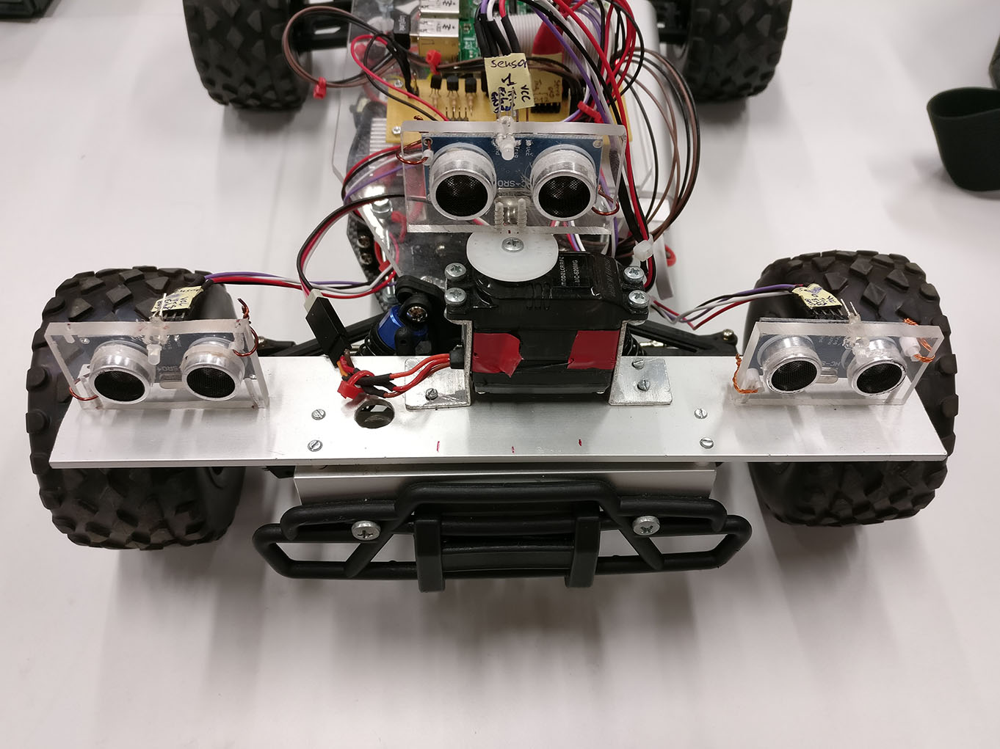 | 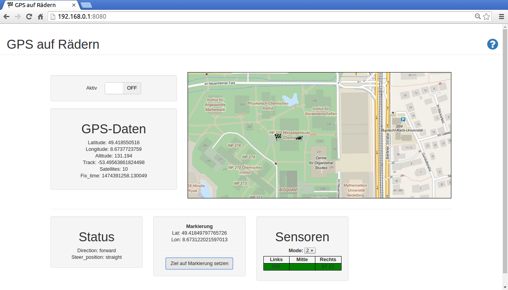 | 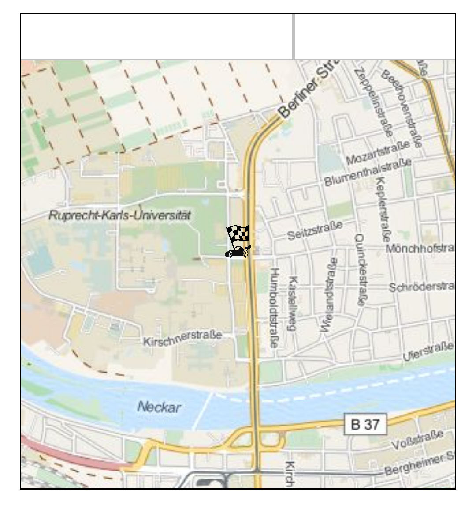 |
| Die drei Ultraschallsensoren | Weboberfläche zur Steuerung mit Echtzeitinformationen | Weboberfläche auf einem Smartphone |
Auf dem Screenshot der Weboberfläche sind alle Funktionalitäten zu sehen. Auf der Karte ist die aktuelle Position des Autos markiert. Die Karte im Bereich des Neuenheimer Feld ist offline auf dem Raspberry verfügbar. Durch Klicken lässt sich ein Ziel auswählen, dessen Koordinaten unten bei angezeigt werden. Durch einen Klick auf "Ziel auf Markierung setzen", wird dieser Marker als aktuelle Zielposition eingetragen. Durch einen weiteren Klick auf den "Aktiv" Switch beginnt das Auto die automatische Ansteuerung des Ziels. Zusätzlich lassen sich auf der linken Seite zahlreiche Informationen zu den aktuellen GPS Daten ablesen. Unterhalb der Karte ist ebenfalls der aktuelle Status der Fahrzeugsteuerung und der gewünschte Status angezeigt. Dieser gibt zum Beispiel die Fahrtrichtung "vorwärts" aus. Desweiteren lässt sich der aktuelle Status der Sensoren auslesen. Ist kein Hindernis in Sicht, erscheinen diese Grün. Bei einem eventuellen Hindernis gelb. Ist mit Sicherheit ein Hindernis im Weg, wird die Statusanzeige rot. Wenn einer der beiden Sensoren links oder rechts ein Ziel erkannt hat, wird der mittlere Sensor ausgelesen um einen Weg um das Hindernis herum zu ermitteln. Jederzeit wird für jeden Sensor der Abstand zum nächsten Hindernis angezeigt. Die komplette Weboberfläche ist responsive aufgebaut und kann somit von beliebigen Endgeräten wie Smartphones bequem benutzt werden. In der rechten oberen Ecke befindet sich zudem ein Fragezeichen Button, mit dem diese Dokumentation geöffnet werden kann.
Milestone 3 (15.08.2016): Verlagern des GPS/Kompass Moduls
Unser dritter Milestone beschäftigte sich mit dem Verlagern des kombinierten GPS/Kompass Moduls, welches vom Auto zur Bestimmung des Standorts und Orientierung benutzt wird. Dieses befand sich im ursprünglichen Zustand des Autos auf einem 35cm hohen Stab, um es gegen mögliche Störstrahlung von Motor und Prozessoren abzuschirmen.
| 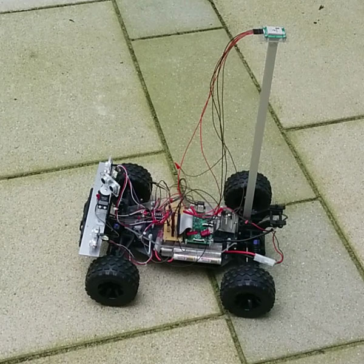 | 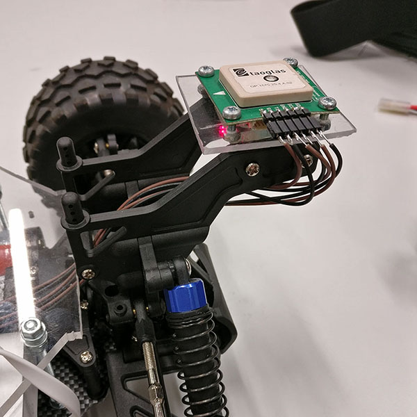 |
| Modul auf Stab | Modul im Heck |
Unsere ersten Ideen waren es, das Modul gegen elektrische Felder abzuschirmen, oder eine externe Antenne zu verwenden. Wir führten zunächst Messungen der GPS Genauigkeit in der ursprünglichen Position durch und brachten das Modul dann provisorisch auf der Halterung des Heckspoilers an. Nach der Durchführung einer weiteren Reihe an Messungen stellten wir fest, dass diese Distanz scheinbar ausreichend war um eine Störung des GPS durch andere Komponenten auszuschließen.
 |
 |
 |
| Modul auf Stab, mean: 8.5906m | Modul im Heck, mean: 8.8642m | Modul + WLAN im Heck, mean: 8.6812m |
Später bemerkten wir bei der Evaluierung des Kompass jedoch, dass dieser durch die Spule des Motors gestört wird. Statt des vollen Spektrums von 0 bis 360 Grad gab dieser nur Werte in einem Bereich von 20 bis 40 zurück und schwankte dabei stark. Da es sehr schwierig ist, magnetische Felder abzuschirmen, waren wir gezwungen das Modul wieder auf den Stab zu verlagern.
Der Ansatz der externen Antenne verfiel nach einiger Recherche, da das GPS Modul bereits über eine Antenne verfügt. Diese ist allerdings bei GPS Modulen nicht in Form einer Stabantenne möglich, sondern ist in Form einer rechteckigen Fläche. Oberhalb der eigentlichen Platine befindet sich die rechteckige, etwa 2cm² große Keramikplatte, welche die Antenne beherbergt. Diese ist eine der größten und genauesten Ausführungen die im Modellbaubereich erhältlich ist.
Unsere letzte Idee zur Erhöhung der GPS Präzision bestand darin, das WLAN Modul in die Front des Fahrzeugs zu verlegen. Nachdem eine weitere Reihe Tests keine messbaren Unterschiede hervorbrachte, verlegten wir das GPS Modul zu Testzwecken direkt neben das GPS Modul. Auch hier sahen wir keine nennenswerten Schwankungen in der Genauigkeit, weswegen wir das WLAN Modul wieder an seinen ursprünglichen Platz direkt im Raspberry verlegten und es als Störquelle ausschließen konnten.
Die erreichte Genauigkeit in den verschiedenen Konfigurationen lässt sich an den unten aufgeführten Plots ablesen. Sie liegt im Mittel bei ca. 8,5 Metern. Dies ist ausreichend für eine ungefähre Navigation in Richtung Ziel. Es wäre sinnvoll hier in einem weiterführenden Projekt anzusetzen, um die Standortbestimmung zu verbessern. Mehr dazu unter Ausblick. Ein Schaltplan zum Anschluss des GPS Moduls befindet sich unter Medien.
Milestone 4 (23.09.2016): Verbesserungen an Hardware, Kabelmanagement und Dokumentation
Unser erweiterter vierter Milestone beinhaltete das gesamte Kabelmanagement und generelle Verbesserungen am Aufbau der Hardware. Dazu zählen zum Beispiel eine Lasche um die Batteriepacks zu sichern,
sowie die Fixierung des Stabes, welche das GPS Modul trägt. Weiterhin wurden der Spannungswandler und das Akkupack, welche das Raspberry versorgten, durch eine USB Powerbank ersetzt.
Dies hat mehrere Vorteile: Zum einen lassen sich nun der Akku für die Motoren und die Powerbank für das Raspberry gleichzeitig laden, zum anderen stellten wir teilweise starke Hitzeentwicklung am Spannungswandler fest, welche trotz
eines Heatspreaders weiterhin auftraten fest. Diese führten teilweise zu einem Absturz des Raspberrys, wenn der Servor des mitleren Sensors bewegt wurde. Wir vermuteten als Problem zu starke Spannungsschwankungen durch die bisherige Akkulösung.
Nach dem Einsatz der Powerbank stellten wir keine weiteren Ausfälle mehr fest. Weiteres hierzu im Ausblick.
Weiterhin wurden während dieser Zeit auch die komplette Homepage mit der Projektdokumentation erstellt, finale Anpassungen an der Software durchgeführt und die Abschlusspräsentation vorbereitet. Diese befindet sich ebenfalls in der Sektion Medien.
| 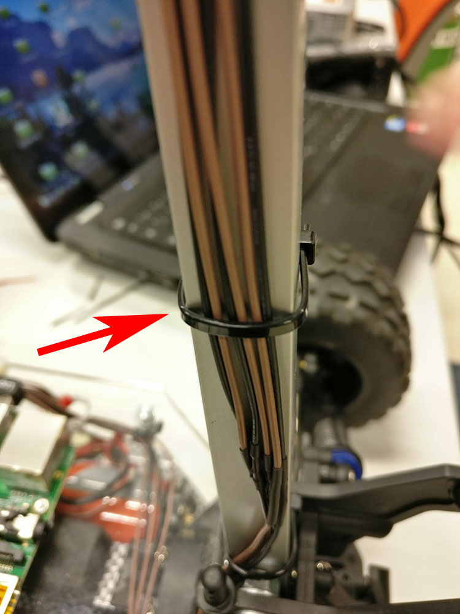 | 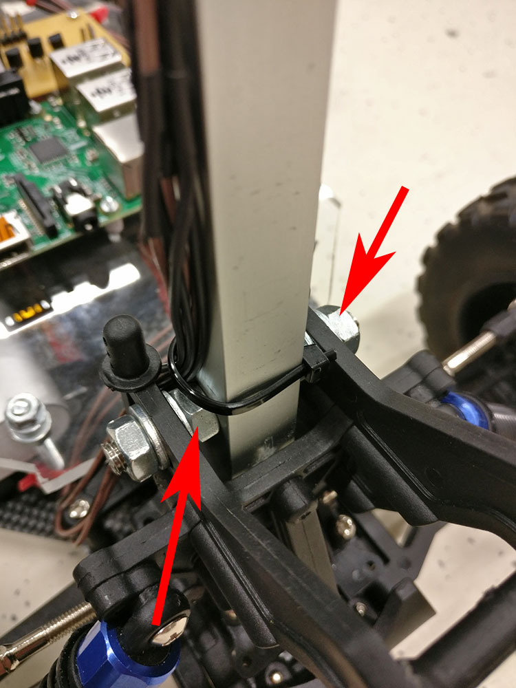 | 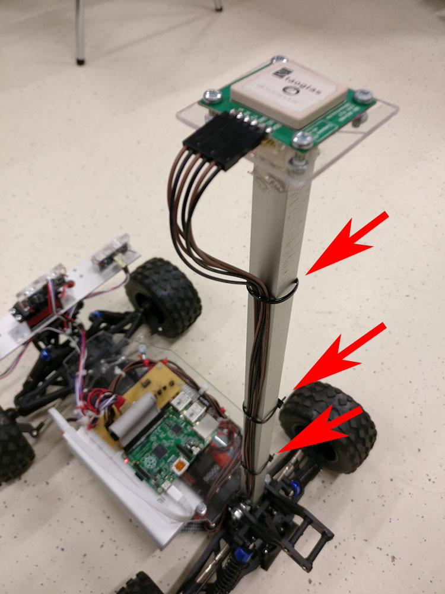 | 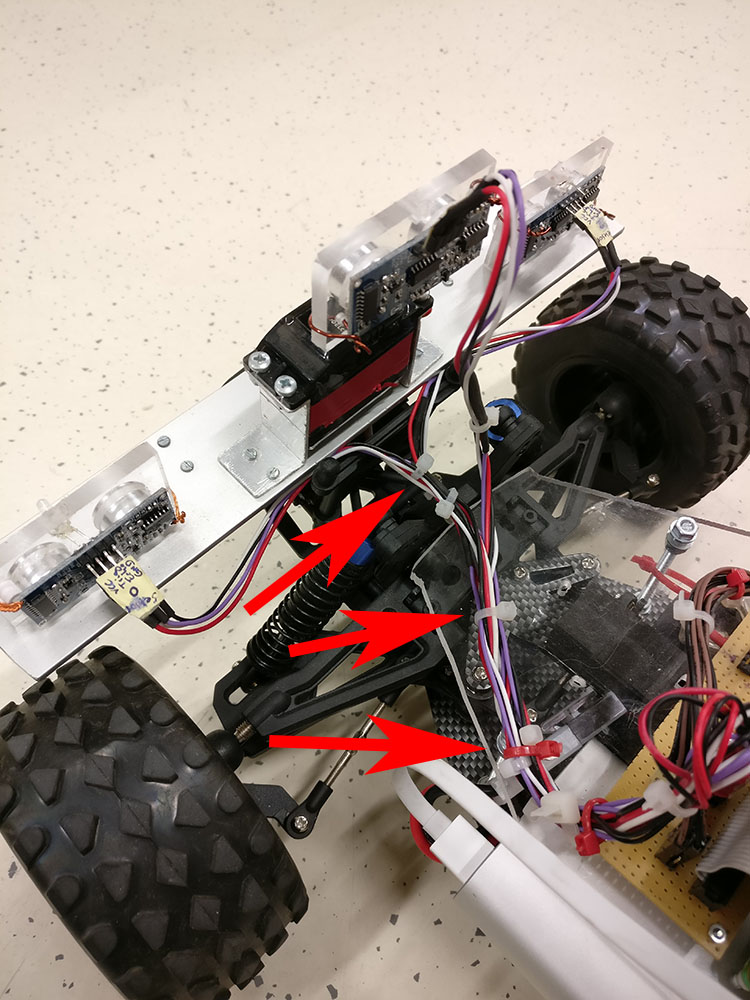 |
Anleitung zur Inbetriebnahme
| 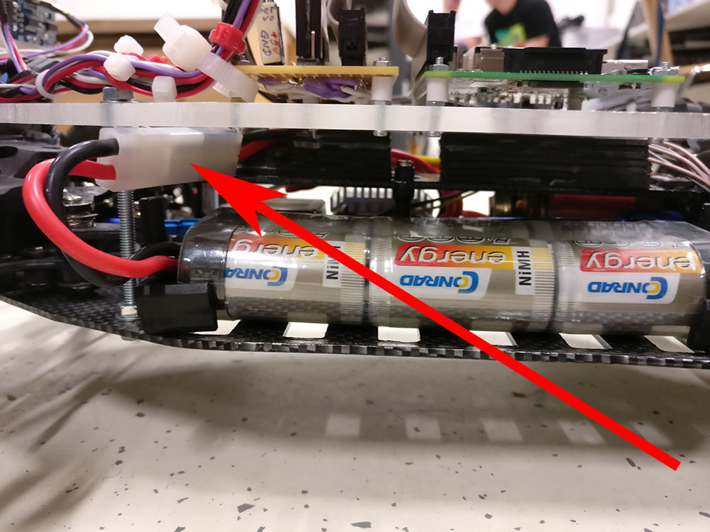 | 1) Akku für Motoren anschließen |
| 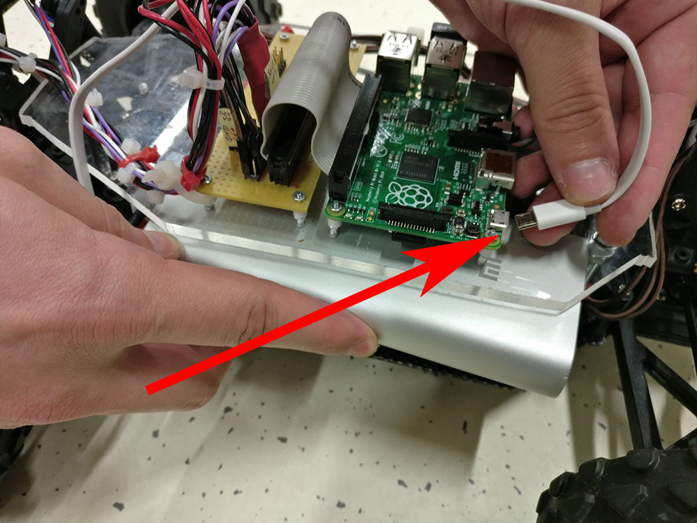 | 2) Powerbank / Akku an Raspberry anschließen |
| 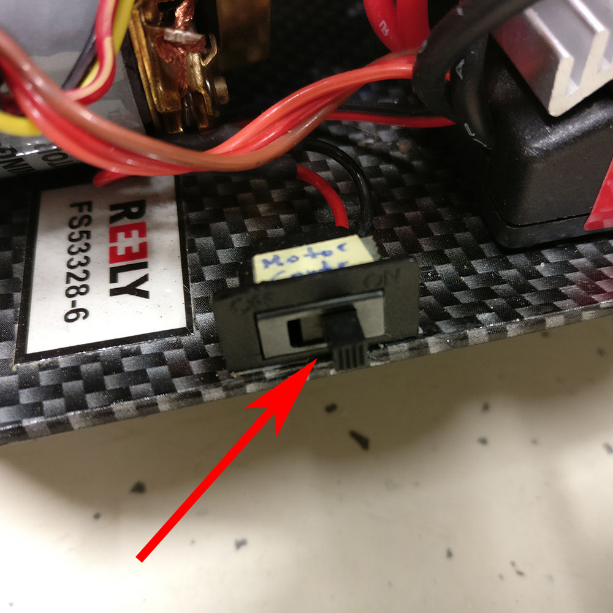 | 3) Sicherstellen, dass Unterbrechungsschalter für Motor auf "On" steht |
| 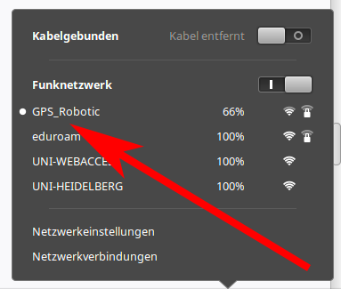 | 4) Verbinden mit dem WLAN "GPS_Robotic" (pw: gps_robotic14) |
| 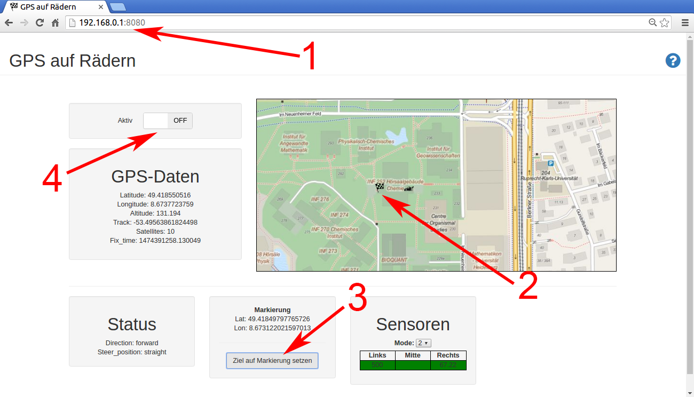 | 5) Aufrufen der Seite 192.168.0.1:8080 im Browser 6) Ziel auf Karte auswählen 7) Button "Ziel auf Markierung setzen" drücken 8) Auf "On" klicken |
Aufgetretene Probleme und Nützliches
Durch die geringe Menge an Dokumentation traten viele Schwierigkeiten beim Einstieg in das Projekt auf. Um diese in Zukunft zu vermeiden, listen wir hier detailliert sämtliche aufgetretenen Probleme auf:
- Ausrichtung des GPS Moduls: Der Code wurde entsprechend angepasst, sodass das Modul nun mit Pfeilrichtung in Fahrtrichtung ausgerichtet werden muss.
- Anschluss des GPS Moduls: Die Kanäle RX und TX müssen vom GPS Modul über Kreuz an die entsprechenden GPIO Pins angeschlossen werden. Siehe Schaltplan.
- Verbinden mit dem WLAN "GPS_Robotic" des Fahrzeugs: Passwort: "gps_robotic14", die IP Adresse des Raspberrys bei bestehender WLAN Verbindung lautet "192.168.0.1".
- Benutzername und Passworts des Raspberrys sind: User: "pi", Passwort: "raspberry".
- Um Änderungen am Code zu erleichtern, kann das Raspberry unter Linux als Laufwerk gemountet werden. Hierfür genügt der Befehl "sshfs pi@:/ ~/raspi/".
- Falls das Raspberry per LAN an einem der Labor Rechner angeschlossen wird, erhält es eine andere Netzwerk IP. Diese kann mit dem Befehl "ip n | grep b8:27:eb" gefunden werden.
- Unebener Untergrund sorgt für Schwierigkeiten bei der Navigation und bringen das Fahrzeug leicht vom Kurs ab. Ein glatter und wagrechter Boden ist zum Testen wichtig.
- Ausrichtung des GPS Moduls: Der Code wurde entsprechend angepasst, sodass das Modul nun mit Pfeilrichtung in Fahrtrichtung ausgerichtet werden muss.
- Anschluss des GPS Moduls: Die Kanäle RX und TX müssen vom GPS Modul über Kreuz an die entsprechenden GPIO Pins angeschlossen werden. Siehe Schaltplan.
- Verbinden mit dem WLAN "GPS_Robotic" des Fahrzeugs: Passwort: "gps_robotic14", die IP Adresse des Raspberrys bei bestehender WLAN Verbindung lautet "192.168.0.1".
- Benutzername und Passworts des Raspberrys sind: User: "pi", Passwort: "raspberry".
- Um Änderungen am Code zu erleichtern, kann das Raspberry unter Linux als Laufwerk gemountet werden. Hierfür genügt der Befehl "sshfs pi@
- Falls das Raspberry per LAN an einem der Labor Rechner angeschlossen wird, erhält es eine andere Netzwerk IP. Diese kann mit dem Befehl "ip n | grep b8:27:eb" gefunden werden.
- Unebener Untergrund sorgt für Schwierigkeiten bei der Navigation und bringen das Fahrzeug leicht vom Kurs ab. Ein glatter und wagrechter Boden ist zum Testen wichtig.
Ausblick
Das wichtigste Ziel um eine genauere Zielführung zu erreichen, ist die Verbesserung der GPS Genauigkeit. Die momentane Genauigkeit von ca. 8,5 Metern reicht zwar aus um zum Ziel zu navigieren, jedoch kommt es immer wieder zu relative
starken Abweichung während der Route. Eine Möglichkeit wäre die in diesem Blogeintrag beschriebene Methode, welches mithilfe eines Differenzsignals einer festen Basis die Genauigkeit stark verbessern kann.
In der Endphase unseres Projekts zogen wir in Erwägung, den mittleren Ultraschallsensor durch einen Infrarotsensor zu ersetzen. Dieser gibt den Abstand zu einem Objekt durch eine Output Spannung direkt wieder. Es muss nicht wie beim Ultraschallsensor gemessen werden in welcher Zeit das Signal zurückgekommen ist. Außerdem ist die Messung des IR Sensors eigenständig und permanent. Für den Anschluss wird ein Analog to Digital Wandler benötigt. Ein solcher liegt GPS Projekt A bei.
Es wäre sinnvoll die Stromversorgung der Servos und Sensoren nicht über das Raspberry laufen zu lassen, da dieses dann bei inkonsistenter Stromversorgung durch die Überbeanspruchung abstürzen kann. Der Spannungswandler der dem Auto beiliegt kann modifiziert werden, sodass er den Strom vom sekundären Akku auf Raspberry und Sensoren/Servos aufteilt.
Wir halten es für sinnvoll eine Lösung mit Stereokameras anzustreben, welche nicht nur zur Hinderniserkennung, sondern auch zur Wegfindung genutzt werden können.
In der Endphase unseres Projekts zogen wir in Erwägung, den mittleren Ultraschallsensor durch einen Infrarotsensor zu ersetzen. Dieser gibt den Abstand zu einem Objekt durch eine Output Spannung direkt wieder. Es muss nicht wie beim Ultraschallsensor gemessen werden in welcher Zeit das Signal zurückgekommen ist. Außerdem ist die Messung des IR Sensors eigenständig und permanent. Für den Anschluss wird ein Analog to Digital Wandler benötigt. Ein solcher liegt GPS Projekt A bei.
Es wäre sinnvoll die Stromversorgung der Servos und Sensoren nicht über das Raspberry laufen zu lassen, da dieses dann bei inkonsistenter Stromversorgung durch die Überbeanspruchung abstürzen kann. Der Spannungswandler der dem Auto beiliegt kann modifiziert werden, sodass er den Strom vom sekundären Akku auf Raspberry und Sensoren/Servos aufteilt.
Wir halten es für sinnvoll eine Lösung mit Stereokameras anzustreben, welche nicht nur zur Hinderniserkennung, sondern auch zur Wegfindung genutzt werden können.
Quellcode
Der Quellcode wurde über git verwaltet und auf github gehostet. Er kann hier eingesehen und heruntergeladen werden:
GPS-Car 2016
Webseiten der vorherigen GPS-Car Projekte:
GPS on Wheels - A
GPS on Wheels - B
GPS-Car 2016
Webseiten der vorherigen GPS-Car Projekte:
GPS on Wheels - A
GPS on Wheels - B
Medien
| 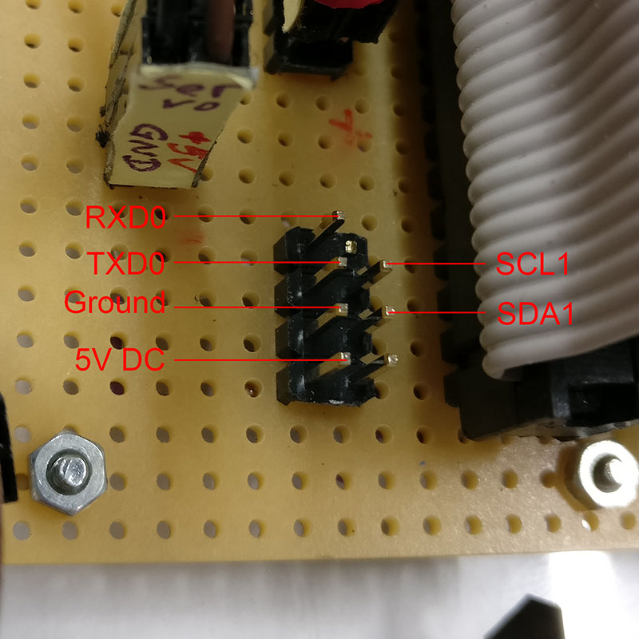 | Schaltplan: Die Kontakte zum Anschluss des GPS Modul sind durch ein Breakout Board von den GPIO Pins des Raspberrys abgeleitet. Zu beachten ist, dass die Kontakte TX und RX des Moduls über Kreuz angeschlossen werden müssen. |
| 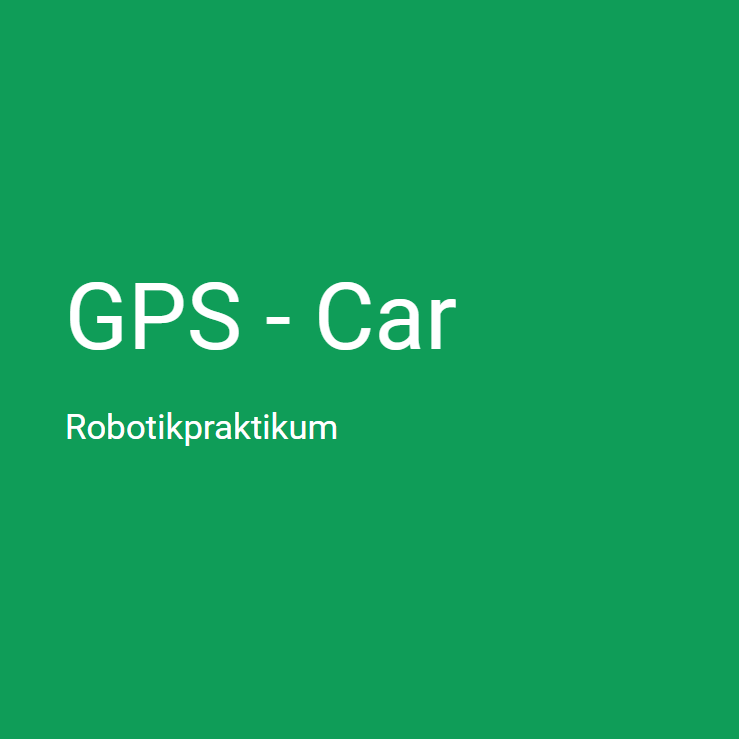 | Präsentation: Die Abschlusspräsentation, welche am 23.09.2016 gehalten wurde. |